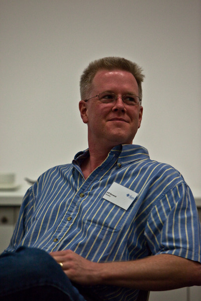

| Work in progress! |
Yes, this is relevant!
To understand illumos and the illumos community, it helps to know the history of who we are and where we all came from, both corporate and personal. Much of how the illumos community operates is based on decades of operating system development, especially from the people behind Sun Solaris.
Some/much of the below (so far) comes from Bryan Cantrill's talk Fork Yeah! The Rise and Development of illumos (embedded above) given at USENIX LISA, December, 2011.
SunOS: A peopleʼs history
It all starts with Sun Microsystems.
- In the early 1990s, after a painful transition to Solaris, much of the SunOS 4.x engineering talent had left.
- Problems compounded by the adoption of an immature SCM, the Network Software Environment (NSE).
- The engineers revolted: Larry McVoy developed a much simpler variant of NSE called NSElite (ancestor to git).
- Using NSElite (and later, TeamWare), Roger Faulkner, Tim Marsland, Joe Kowalski and Jeff Bonwick led a sufficiently parallelized development effort to produce Solaris 2.3, "the first version that worked".
- ...but with Solaris 2.4, management took over day-to- day operations of the release, and quality slipped again.
Solaris 2.5: Do or die
- Solaris 2.5 absolutely had to get it right — Sun had new hardware, the UltraSPARC-I, that depended on it
- To assure quality, the engineers took over, with Bonwick installed as the gatekeeper. He gave a talk on Solaris to the Sun Systems Group in September, 1994. It included a section on the Quality Death Spiral (excerpted here) - a timeless phenomenon that remains our omnipresent fear.
- Bonwick was granted authority to "rip it out if itʼs broken" — an early BDFL model, and a template for later generations of engineering leadership. (bmc says: "This is the only model for software development that ever works; no one has ever been able to develop software democratically.")
- Solaris 2.5 shipped on schedule and at quality. Engineers were making risk decisions now, not management, and they would never again relinquish control of the risk management of the operating system.

^ Jeff Bonwick at the Kernel Conference Australia, 2009 - photo copyright Andre van Eyssen
The rise of the Bonwick Youth
- In the mid-1990s, it became a foregone conclusion that UNIX would die at the hands of Windows NT (!)
- Hard to believe, but Sun was the only computer vendor whose Windows NT strategy was to beat Windows NT
- Sunʼs dedication to this vision — the operating system as a nexus of innovation — attracted an entire new generation of engineers to the company
- New generation became known as the "Bonwick Youth"
- As talent attracted talent, there emerged an opportunity to become to OS innovation in the 2000s what Xerox PARC was to computing innovation in the 1970s
Revolutionary ideas
By mid-2001, the trajectories set out by the move from SunOS 4.x to Solaris a decade prior had reached their logical conclusion. The OS worked, rock solid and feature-full. Development started on more radical ideas, each of which would become revolutionary in its own right. A bunch of headstrong engineers each had ideas they wanted to explore, and Sun allowed for that (because no one was in control).
- ZFS (née Pacific) - Jeff Bonwick had long wanted to rewrite file systems from scratch and eliminate volume management entirely.
- DTrace - Bryan Cantrill was sick of systems that were sucking and not knowing why. Worked with Mike Shapiro and Adam Leventhal to develop DTrace.
- Zones (née Project Kevlar) - (Jerry Jelinek) Taking FreeBSD Jails to their logical conclusion, what you needed by now was not a virtual machine, but a virtual operating system that can run without performance penalty.
- Fault Management Architecture (FMA)
- Service Management Facility (SMF, née Greenline)
- FireEngine/Crossbow
- Least Privilege
These all came together in Solaris 10.
The wellspring of innovation
- These were technologies invented and initiated by engineers, not managers or marketers.
- These projects reflected the people behind them, and their personal histories with the operating system.
- Each of these projects represented an opinion — born of both experience and frustration ("the kiln of unspeakable pain") — about what the operating system should be.
- Organizations donʼt innovate — people do. You can't take an innovative organization, remove the people, and get innovation.
Cannot resolve external resource into attachment.
^ Jim Hughes and Jeff Bonwick at CommunityOne 2008, demonstrating the resiliency of ZFS by power-drilling holes in hard disks
photo by Deirdré Straughan
Open source?
- As the rise of Linux (and particularly x86) forced the market price of OS acquisition to zero, it became clear that open sourcing the operating system was the right business decision
- The OS had always been a loss-leader for Sun; the company made money from complementary goods (hardware, support, etc.)
- Moreover, open sourcing the system would assure that our innovations would transcend products and become advances in the state of the art
- This was entirely in character for the company that had pioneered "open systems" some fifteen years prior! Sun had created NFS and ported it to its competitors' platforms in the late 1980s.
Open source!
- Starting in the late 1990s, there was serious talk of open sourcing the operating system...
- ...but in a system with deeply proprietary roots and a troubled legal past, it takes a lot more than just talk
- In 2004, Jonathan Schwartz made it a priority to open source the operating system
- In January of 2005, OpenSolaris was born when DTrace became the first of the system to be open sourced
- The rest of the OS was open sourced in June 2005
- The OS was developed in the open from that point — changes to the OS were open source as they integrated
Leaping the proprietary chasm
- Very, very few established software projects have leapt the chasm from proprietary to open
- Unfortunately, not all elements of the OS could be open sourced; some contracts prevented some small (but important) bits from being open sourced
- To allow for such proprietary drivers, Sun developed a file-based copy-left license, the Common Development and Distribution License (CDDL) - approved by OSI.
- Contrary to public claims by some ex-Sun employees, this was not done to be deliberately GPL incompatible! It was necessary to allow for proprietary drivers.
OpenSolaris challenges
- That certain critical bits had to remain proprietary made forking the operating system technically difficult...
- And that virtually all Solaris implementation knowledge lived within Sunʼs walls made it a practical impossibility
- The community had the right to fork, but not the power This led down the primrose path to open source governance: governing boards, elections, constitutions
- And because all development on the system realistically required copyright assignment to Sun, OpenSolaris (sadly) remained a Sun puppet
- Worse, some among Sunʼs middle management fancied themselves puppeteers...

^ Ian Murdock announcing the OpenSolaris distro at CommunityOne, 2008 - graphic by Hugh MacLeod, photo by Deirdré Straughan
The "OpenSolaris missile crisis"
- In fall of 2007, Sun decided to create a new OpenSolaris-based distribution called... OpenSolaris
- Rightfully, the OpenSolaris Governing Board (OGB) was upset about this — it made the community that much more of a charade to have its very name hijacked
- Humanity-wasting governance orgy ensued...
- A compromise was reached in the end that allowed for de-escalation, but it became clear that — despite stated intentions — Sun did not want an independent OGB
- The community was deflated; OGB composition became more and more Sun dominated, and OpenSolaris was in the doldrums for the next three years
The end of an era
- Ailing Sun was bought by Oracle in 2009, with the acquisition closing in February 2010
- Sun was concisely eulogized by Scott McNealy:
- Kicked butt, had fun, didnʼt cheat, loved our customers, changed computing forever.
- After the acquisition closed, it became clear that Scottʼs eulogy was (ironically?) the antithesis of Oracle
- Over 2010, it became clear that Oracle had absolutely no interest in OpenSolaris
- Despite that it would be obviously stupid, there was even a move within Oracle to actually close the system!

^ Garrett D'Amore at the Kernel Conference Australia, 2009 - photo copyright Andre van Eyssen
Meanwhile, the birth of illumos
- Starting in the summer of 2010, Garrett D'Amore at Nexenta — with help from Rich Lowe, Jason King and others — began the process of either writing the closed bits from scratch or porting them from BSD
- By early August, an entirely open system was booting
- Dubbed "illumos" (from illuminare, Latin for illuminate) and made available on August 3, 2010.
- Notably, the announcement included both code and a working demo — leading with technology, not rhetoric
- illumos was not designed to be a fork, but rather an entirely open downstream repository of OpenSolaris
The undignified death of OpenSolaris
- On Friday, August 13th, 2010, an internal memo was circulated by the putative Solaris leadership:
- We will distribute updates to approved CDDL or other open source-licensed code following full releases of our enterprise Solaris operating system. In this manner, new technology innovations will show up in our releases before anywhere else. We will no longer distribute source code for the entirety of the Solaris operating system in real-time while it is developed, on a nightly basis.
- Greatest act of cowardice in the history of open source: this was never publicly announced; it was simply leaked
- Updates silently stopped on August 18th, 2010
- On top of that, it was a lie: Solaris 11 was released on November 9, 2011 — and there was no source release
The Solaris diaspora
- The Solaris diaspora (which was already underway) was greatly accelerated by Oracleʼs depraved act
- Within 90 days, the entire DTrace team had left Oracle, all primary inventors of ZFS had left Oracle and primary engineers for both zones and networking had left Oracle
- Fortunately, Oracleʼs loss was illumosʼs gain: nearly all of these engineers went to companies betting on illumos (Joyent, Nexenta, Delphix...)
- It is no surprise that these engineers have continued to innovate — and that a year later, their innovations (big and small!) have landed in illumos
The illumos innovation irony
- There is no copyright assignment in illumos; code is under the CDDL, but copyright remains with the holder
- But with the closing of Solaris, Oracle itself no longer abides by the CDDL — which it can only do because it was assigned copyright on all community contributions
- However, Oracle does not own copyright on the illumos innovations; it cannot take this code back until it abides by its own license!
- In illumos, we have seen critical innovations and bug fixes in ZFS, DTrace, Zones and other core technologies
- These innovations will never be in Oracle Solaris
- illumos is the repo of record for critical OS technologies!
ZFS
- Most core ZFS engineers now in illumos community: e.g. Matt Ahrens, Eric Schrock, George Wilson, Adam Leventhal, Bill Pijewski and Brendan Gregg
- ZFS engineers from several different illumos-based companies formed a joint ZFS working group
- First concrete technology artifact was a proposal for SPA versioning that allows disjoint features from different vendors without requiring conflicting versions
- That this was a most pressing problem speaks for itself: many different companies are betting big on illumos ZFS!
- Matt Ahrens added the "refratio" property to understand the compression win for referenced data
- Matt Ahrens added the ability to get estimated progress for zfs send and receive (!)
- Bill Pijewski and Jerry Jelinek added Zones-based I/O throttling, allowing for optimal disk operation in light of multi-tenant demands
- Dan McDonald and Sunit Gupta implemented UNMAP for STMF, allowing for better ZFS-backed iSCSI LUNs
- Many bugs fixed!
- ...and more...
DTrace
- Virtually all DTrace engineers are now in the illumos community: Adam Leventhal, Brendan Gregg, Eric Schrock, Dave Pacheco
- Added a log-linear quantization action (llquantize()) Added KVM support with vmregs[] variable
- A bunch of little stuff: allowed tracemem() to take a variable-size; added toupper()/tolower(); allowed lltostr() to take an optional base
- Added USDT provider reaping (a long-time issue) Eric Schrock added the CTF-aware print() action!
- dtrace.conf 2012
Zones
- Primary zones engineer (and JumpStart tech lead!) Jerry Jelinek is very active in the illumos community
- Particular focus on high-tenancy systems; it is highly likely that the machines that run the most number of zones in production are doing so today on illumos
- Added many per-zones kstats (e.g. for CPU usage, VM activity, I/O activity, etc.)
- Reimplemented rcapd to be much more reliable, especially under heavy load
- Fixed many bugs related to many-zone configurations Added -z and -Z options to svcs
KVM
- In addition to work on the traditional core technologies of ZFS, DTrace and Zones, we have added a new one: Joyent team ported KVM from Linux to illumos
- KVM makes use of hardware (specifically, Intel) virtualization support to allow one to run arbitrary x86 guests at nearly bare-metal speed
- Work was presented by Joyent at KVM Forum this year; currently running in production in the Joyent cloud
- illumos-based KVM has three distinct advantages over Linux-based KVM: ZFS, DTrace and Zones
- illumos distributions SmartOS and OpenIndiana have KVM support by default
illumos Distributions
- There are already several illumos-based distributions, with more on the way
- OpenIndiana includes IPS packaging and has both server and desktop variants
- SmartOS is a Joyent distribution features NetBSD packaging and is designed for cloud computing
- illumian is a new Nexenta distribution that features Debian packaging
- OmniOS
- These distributions complement each other — they are growing the illumos pie more than dividing it!
illumos community values
- We value the freedom to fork over governance; code over discussion; innovation over democracy
- David Clark of IETF fame put it best (h/t @kebesays):
- We reject: kings, presidents and voting.
- We believe in: rough consensus and running code
- Instead of a BDFL, we have a benevolent oligarchy — and so far we have achieved consensus with little effort
- We value utility; we donʼt do things for their own sake!
- These values were embodied in the recent illumos hackathon (h/t @ahl), which was a resounding success!
Getting involved with illumos
Start playing around with a distro that suits you
Start playing around with the code: http://src.illumos.org or https://github.com/illumos/illumos-gate
If youʼre looking for something to do or have questions, donʼt hesitate to ask: Mailing list: developer@lists.illumos.org IRC: #illumos on irc.freenode.net
If you donʼt know where to go, you can always tweet or message Deirdré Straughan (@deirdres), Joyentʼs SmartOS/illumos community manager
Thank you!
@gedamore for conceiving of illumos, birthing it, and leading the community
@richlowe for his tremendous work from the beginning on all aspects of illumos
@openindiana and @aszeszo for OpenIndiana
@joshwilsdon, @johnnysunshine and @rmustacc for their work on the SmartOS distribution
@ahl for organizing the illumos hackathon — and all of the hammer-swinging butt-kickers who attended!
Farewell to Sun
A video I (Deirdré) made just before leaving Oracle for Joyent, featuring many of the people mentioned above.
{kind=link}